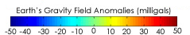

You'll often hear people saying gravity on Earth is a constant, 9.81 ms-2. But that's not actually strictly true. There are small fluctuations across the surface, in the rigion of +/- 50 milligals, where 1 Gal is defined as 1cm per second squared. The above globe shows where these fluctuations are, with the blue/depressed areas representing areas of low gravity and red elevated areas representing those areas where gravity is stronger.